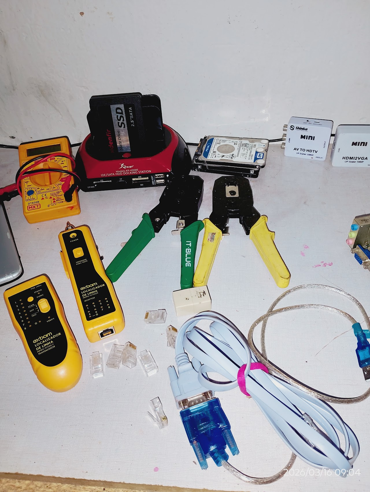
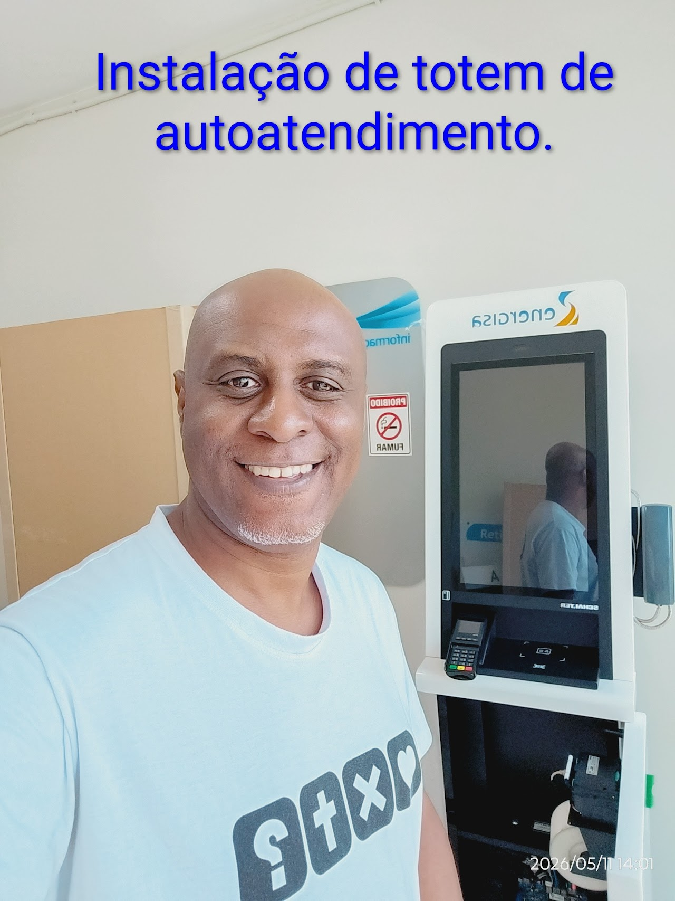

Galeria de Atendimentos Realizados
Alguns trabalhos em campo realizados com sucesso em parcerias corporativas e atendimentos de Field Service.




Seu braço operacional e Field Service de TI em Cataguases, Zona da Mata e região de Minas Gerais. Garantimos suporte local ágil com inteligência alinhada às demandas estruturadas da sua empresa ou matriz nacional.
Confiança & Compliance
"Trabalhamos com a melhor tecnologia e desenvolvemos soluções inovadoras para criar novas experiências adaptadas às necessidades de nossos clientes."
Soluções estruturadas para empresas com operação nacional que precisam de suporte técnico de campo local em Minas Gerais, além de atendimento residencial de alto padrão corporativo.
Atendimento de campo para empresas, consultorias e integradores de outros estados que precisam de um técnico local qualificado para manutenção de servidores, roteadores, ativos de rede, racks, desktops e visitas sob demanda corporativa.
Configuração estruturada de switches gerenciáveis, roteadores de borda, access points corporativos empresariais e cabeamento de rede estruturado com certificação.
Diagnósticos precisos em placas-mãe, reparos eletrônicos avançados, substituição de componentes SMD/BGA e upgrades de performance estruturados para manter a produtividade.
Instalação de sistemas operacionais sob diretrizes estritas corporativas, drivers homologados, pacotes essenciais de produtividade, segurança da informação e backups preventivos em nuvem.
Atendimento remoto rápido e criptografado para correção ágil de falhas de software, lentidão crítica e configurações pontuais em sistemas operacionais e ferramentas.
Atendimento Imediato
Precisa de auxílio agora? Baixe a nossa ferramenta de suporte autorizado para que possamos conectar com total criptografia, segurança e agilidade operacional.
A ferramenta mais leve e rápida para suporte em tempo real. Não necessita de instalação complexa, basta baixar e executar diretamente em sua máquina.
Baixar AnyDeskExcelente alternativa de padrão corporativo mundial para estabelecer conexões altamente criptografadas e seguras de ponta a ponta.
Baixar TeamViewerAgilidade e facilidade operacional no alinhamento para resolver problemas críticos de TI em poucos minutos.
Você entra em contato corporativo e envia o escopo do chamado ou necessidade técnica de Field Service local.
Ajustamos o roteiro operacional, ferramentas necessárias, agendamento em campo ou acesso remoto seguro imediato.
Realização do suporte local qualificado, reportando em tempo real à matriz ou central de monitoramento (NOC).
Equipamento ou link operando 100% com validação de funcionamento, preenchimento de RAT e documentação do serviço.
Atendimento profissional de alto padrão, compliance corporativo e foco absoluto na resolução definitiva do problema.
Assista ao vídeo de apresentação da nossa estrutura de atendimento regional.
Alguns trabalhos em campo realizados com sucesso em parcerias corporativas e atendimentos de Field Service.


“Excelente parceiro de Field Service. Atendeu nosso chamado corporativo com muita pontualidade, reportando o status ao nosso NOC em tempo real.”
“Sempre acionamos a CS Suporte Tech para atendimentos na região da Zona da Mata. Profissional ético, transparente e de altíssimo nível técnico.”
“Conhecimento técnico altamente diferenciado em eletrônica analógica e redes corporativas. Resolve os problemas em campo de verdade de ponta a ponta.”
Seja para suporte emergencial complexo ou parcerias permanentes de Field Service, conte com os seus "olhos e mãos" de TI especialistas na infraestrutura da região.